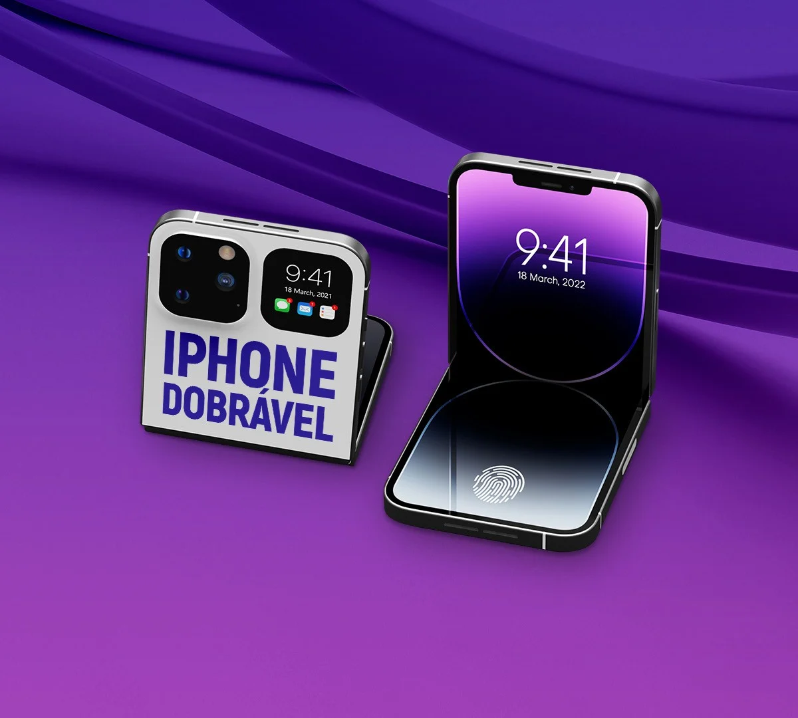
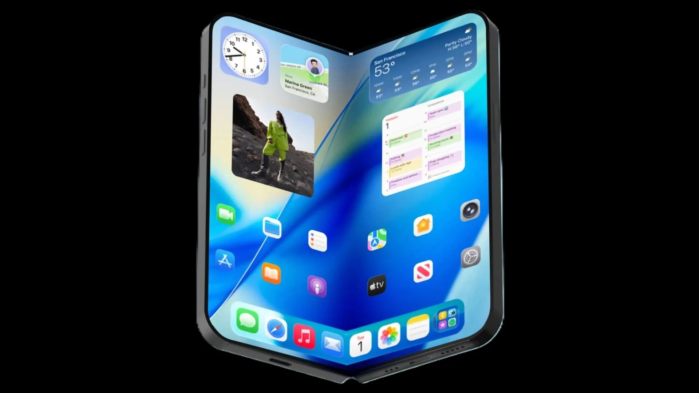

ESTUDO DE DESIGN · 2026
O futuro
cabe em
duas telas.
Um exercício de imaginação sobre como a potência Pro poderia encontrar a liberdade de um novo formato.
Explorar a experiência
01 / FECHADOiPhone 18 Pro FoldMenos limites.
Mais possibilidades.
Fechado, ele cabe no seu ritmo. Aberto, ele muda o tamanho da sua ideia.
Este conceito acadêmico explora uma experiência mais flexível para trabalhar, criar e se conectar — sem escolher entre a mobilidade de um smartphone e a amplitude de uma tela maior.

AMPLIE O SEU PONTO DE VISTAAbra espaço
para o novo.
Uma tela que acompanha a mudança de contexto. Compacta quando você precisa ir, ampla quando você precisa fazer.
de bolso a painel
sem perder o foco
pensados para criar
Visto de
todos os ângulos.
O design não termina na primeira impressão. Explore o objeto, a curva e a atitude.
As imagens e características desta página fazem parte de um exercício visual acadêmico e não representam um produto anunciado oficialmente.
Pronto para
mudar de forma?
Inscreva-se para acompanhar a evolução deste conceito.